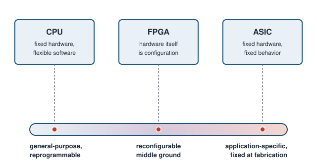
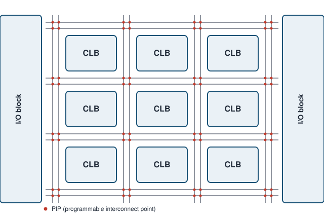
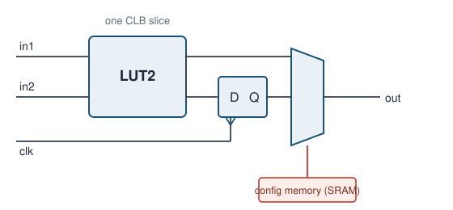
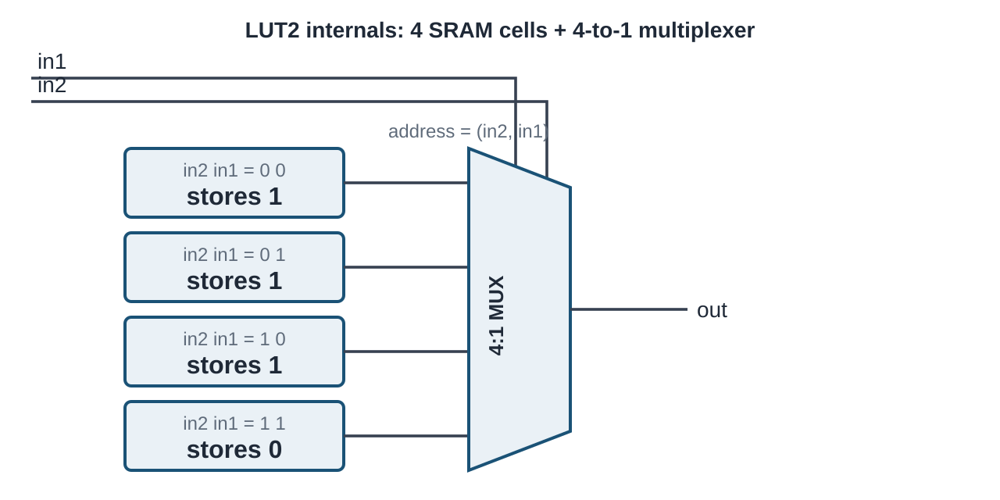
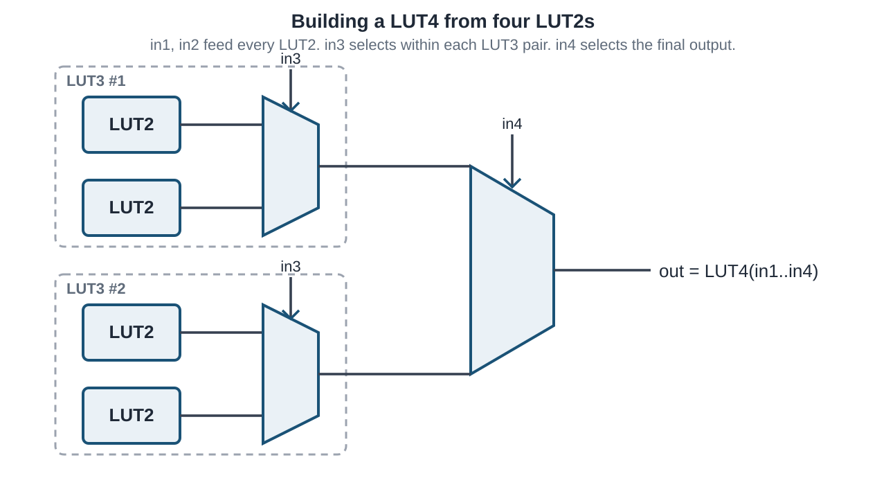
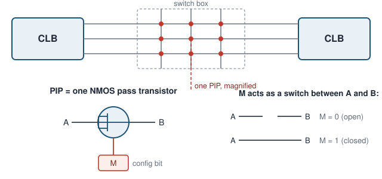
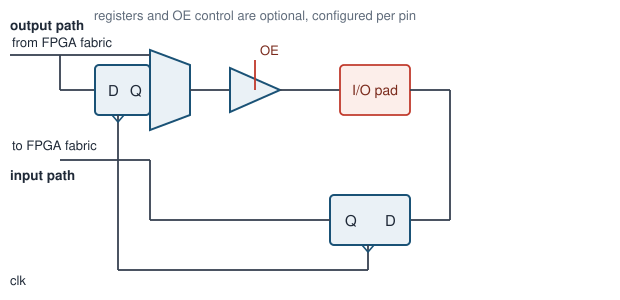
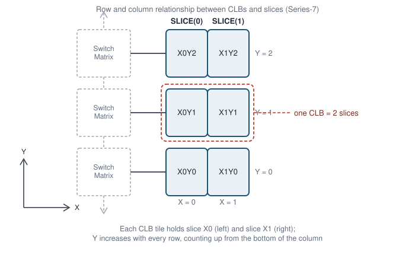
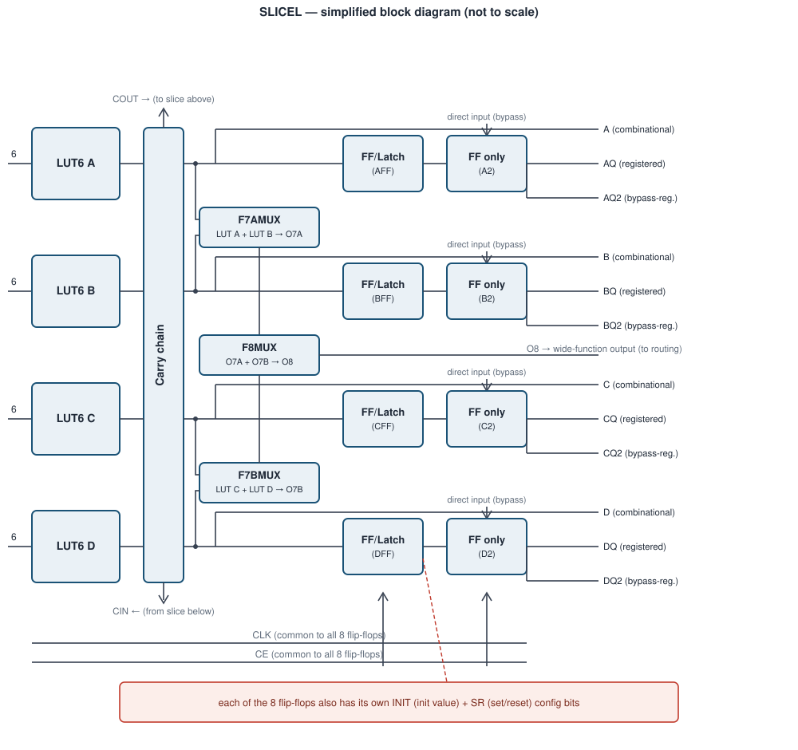

3 FPGA Fundamentals
FPGA Fundamentals
3.1 Goal for this week
- Place the FPGA on the spectrum between a general-purpose CPU and a fixed ASIC, and see why that position makes it the right prototyping target for this course
- Break the FPGA fabric down into its three building blocks: CLB, routing plane, I/O blocks
- Open up a CLB far enough to see the LUT + flip-flop pair that will later become “the thing our synthesized SystemVerilog turns into”
3.2 Why reconfigurable hardware?

As we saw in previous chapters, a CPU is a general-purpose integrated circuit: its function is defined not by its hardware but by the software program a developer writes for it. Development cost and time are low, since a single instruction set can be programmed in general-purpose or domain-specific languages to meet almost any demand — from database search to signal processing and beyond. But this same generality is also the CPU’s biggest disadvantage. A CPU performs well on workloads like databases, yet it can be slow on compute-intensive problems such as neural network inference.
ASIC designs overcome this general-purpose bottleneck by mapping the application directly into hardware rather than software. A well-known example is Google’s Tensor Processing Unit (TPU), built to accelerate the compute-intensive workloads of neural network inference. Its designers tailored the architecture to that one problem, wiring together a matrix of arithmetic logic units (ALUs) instead of following the standard CPU approach of a five-stage pipeline. Comparing a CPU and a TPU on neural network inference, the TPU wins decisively — but hand it a database search instead, and it is useless. This is the core limitation of ASIC accelerators: each one targets a single application, and once fabricated, it cannot be repurposed for anything else.
Comparing the CPU and the TPU, what we would really like is both properties at once: the flexibility to repurpose the device, and hardware tailored to the application at hand to squeeze out its full potential. Reconfigurable hardware, the field-programmable gate array (FPGA), gives us both, and its name spells out how. “Gate array” comes from the internal structure: logic blocks arranged on a matrix-like fabric, echoing the gate-array architecture used in some ASICs. “Programmable” does not mean the FPGA executes a software program in the traditional sense, though it can in a limited way. Instead, it refers to the reconfigurable property itself, achieved by loading a bitstream, a special binary configuration file, onto the device. “Field” refers to the field of application: an FPGA can adapt its internal structure to whatever application is at hand, out in the field, long after manufacturing.
This is exactly the trade-off an FPGA offers. It sits between the CPU and the ASIC by turning the hardware itself into a form of software: the logical function of every building block, and the wiring between them, is set by the bitstream loaded after manufacturing. We get most of an ASIC’s advantage of “hardware built for the job” without paying its fixed non-recurring engineering (NRE) cost or its all-or-nothing commitment. That is exactly why this course targets FPGAs. A mistake in a lab assignment costs a re-synthesis and a few minutes, not a re-spun die. FPGAs are also the standard vehicle for rapid prototyping and hardware acceleration in industry for the same reason. Reconfigurability turns hardware design into something you can iterate on.
3.3 The three building blocks

Every FPGA, regardless of vendor or generation, is built from the same three kinds of block. CLBs (also called logic elements) sit in a regular grid and implement the actual logic functions and storage of the design. Between and around them runs the routing plane: a fabric of wires and programmable switches whose only job is to connect a CLB’s outputs to the inputs of other CLBs, in whatever pattern the design needs. At the edges of the die, I/O blocks connect the fabric to physical pins, translating between the FPGA’s internal signal levels and whatever the outside world expects. None of these three blocks is useful without the other two: a CLB with no routing to reach it is dead logic, and routing with nothing to connect is just wire. Placing a design onto an FPGA is precisely the problem of deciding which CLB implements which piece of logic (placement) and which routing resources carry the signals between them (routing). We will meet both steps again when we look at the FPGA design flow.
3.3.1 Configurable Logic Block (CLB)

The CLB is the main carrier of reconfigurability in an FPGA and its elementary building block. You can think of the CLB as the FPGA equivalent of an assembler instruction, the most basic element everything else is built from. The term itself differs across vendors. Xilinx calls it a logic slice, while Altera calls it a logic element. Either way, they refer to the same thing. As the primary building block for digital circuits, a CLB must support combinational logic, sequential logic, and combinations of the two. It consists of a look-up table (LUT), a flip-flop, and an output mux.
A LUT implements combinational logic through memory lookup rather than by wiring gates together. Structurally, it consists of SRAM (static random-access memory) cells paired with a multiplexer that selects which cell’s content is forwarded to the output, based on the signal inputs. To see this concretely, consider the smallest useful case, a two-input LUT, or LUT2. With two inputs there are four possible input combinations, so a LUT2 is built from four memory cells and a 4-to-1 multiplexer. The two inputs act as the multiplexer’s select lines, in other words as an address, and the output is simply whatever bit is stored in the addressed cell.

To implement logical functions with two input variables, you need to map the truth table into SRAM cells. For example to implement a two-input NAND on a LUT2, we do not build a NAND gate at all: we store the NAND truth table’s output column (1, 1, 1, 0) into the four memory cells, in the order addressed by the two inputs, and the LUT now behaves as a NAND for as long as that configuration is loaded. The reconfigurability of LUTs is what makes FPGAs so flexible: the same LUT can just as easily hold an AND, an XOR, or any other two-input function. Reconfiguring the FPGA never touches a wire between gates. It only rewrites these memory cells. Because those cells are ordinary SRAM, they are volatile: power off the board and the “circuit” is gone, which is why every FPGA design needs a configuration step after every power-up.
We do not build larger LUTs as one giant memory array wired to a huge multiplexer. Instead, real FPGA architectures build them recursively from smaller LUTs, adding one extra input and one extra multiplexer stage at a time. A LUT3 is nothing more than two LUT2s, both fed by the same two inputs, with their outputs chosen between by a 2:1 mux controlled by the third input. Extending the same idea, a LUT4 is built from two LUT3s, each in turn built from two LUT2s, combined by one more 2:1 mux controlled by the fourth input. Each additional input doubles the number of underlying LUT2 building blocks and adds one more layer of multiplexing on top. This recursive structure is exactly why vendors describe their larger LUTs as fracturable: the same physical hardware that implements one LUT4 can, with a small configuration change, split back into two independent LUT3s, or four independent LUT2s, letting the synthesis tool pack more, smaller functions into fewer CLBs when a design does not need the full input width.

Few real digital circuits are purely combinational. Almost every design also needs elements that are synchronous to a clock. To support that, every CLB slice also includes a D flip-flop (DFF) fed from the LUT’s output. As we saw earlier, a DFF copies its input (D) to its output (Q) on the active edge of the clock signal, clk. Through configuration bits, the developer can adapt that DFF’s behavior, choosing whether it triggers on the rising or falling edge, and setting its initial or reset value. This exposes yet another layer of reconfigurability inside the CLB.
The last element of the CLB is the output mux, which picks between the raw LUT output and the flip-flop’s registered output. That mux’s select line is, like the LUT’s memory cells, just another bit in configuration SRAM. The same physical slice can act as combinational logic or as a single-bit register, purely depending on how it is configured. Real devices bundle several LUT + flip-flop slices, wider LUTs, and extra logic (carry chains, muxes for combining LUTs into wider functions) into one CLB. We look at a concrete example of that when we cover a real device architecture later.
3.3.2 Routing plane: programmable interconnect

Routing plays two closely related roles. First, it lets many individual CLBs act as one large digital design: a real circuit needs far more logic and storage than a single CLB slice can hold, so the design is spread across hundreds or thousands of CLBs, and routing is what stitches their individual outputs together into one coherent datapath. Second, routing connects that internal logic to the outside world, joining CLBs to the I/O blocks that carry signals in and out of the fabric. Without it, CLBs and I/O blocks would be correct but disconnected islands of logic.
Between the rows and columns of CLBs run wiring tracks, and at every point where a horizontal and a vertical track cross, a switch box can optionally join them. The atomic component of a switch box is the PIP: a single NMOS transistor used purely as a switch, with its gate driven by one configuration SRAM bit. When that bit is 0, the transistor is off and the two tracks it sits between are electrically separate. When it is 1, the transistor conducts and the tracks become one net. A design’s entire wiring, meaning every connection from one CLB’s output to another CLB’s input, reduces to which of these thousands of PIPs are turned on. This is also why the router is typically the slowest step in the FPGA implementation tools: placement decides which CLB does what, but routing has to find, among a huge and only partially connected mesh of tracks and switch boxes, one specific set of PIPs that realizes every net in the design without any two nets shorting together.
3.3.3 I/O blocks

An I/O block is the boundary between the reconfigurable fabric and a fixed physical pin, and it has to support more than “just wire a signal through.” On the output side, a signal from the fabric can optionally be registered right at the pin before it reaches a tri-state buffer. That buffer’s output-enable (OE) input decides whether the pad is actively driven at all, which is what makes a genuinely bidirectional pin possible. The same pad can be released to high-impedance and read as an input whenever the design is not driving it. The input side mirrors this with its own optional register. Registering directly in the I/O block, rather than in the nearest CLB, shortens the path the signal has to travel before it is captured, which matters because I/O timing margins are usually tighter than internal fabric timing. As with everything else on the chip, whether each of these registers is used, and whether a pin behaves as input, output, or bidirectional, is a configuration decision, not a fact fixed at fabrication.
3.3.4 Reconfigurability, level by level
We have now seen five separate places where a single configuration SRAM bit changes what the FPGA does. Inside the CLB, one set of bits picks the function stored in each LUT, another set picks whether the D flip-flop triggers on the rising or falling edge and what value it resets to, and one more bit decides whether the slice’s output is the LUT’s raw combinational result or the flip-flop’s registered one. Out in the routing plane, a bit per PIP decides which pairs of tracks are joined into the same net. At the I/O block, bits decide whether a register is used on the input or output path, and whether a pin drives, receives, or does both. None of these is a special case. Every one of them is the same primitive: an SRAM cell whose value the configuration step writes before the device does anything useful. What looks like five different kinds of reconfigurability is really one mechanism, repeated at every point in the fabric where a design decision has to be made. This is also, in one sentence, what a bitstream is: the full list of values for every one of these bits, for every CLB, PIP, and I/O block on the device.
3.4 Case study: Xilinx Series-7
We have described the CLB, the routing plane, and the I/O block as three abstract building blocks, present in every FPGA regardless of vendor or generation. To see how a real device turns those abstractions into a concrete architecture, we now look at a specific family: Xilinx Series-7. Series-7 comprises four sub-families, Spartan-7, Artix-7, Kintex-7, and Virtex-7, all built from the same underlying fabric while trading off cost, logic capacity, and signal-processing performance. Spartan-7 targets the low end of that range: small, cost-sensitive, high-volume applications. Virtex-7 sits at the opposite end, aimed at the highest connectivity bandwidth, logic capacity, and DSP throughput. Artix-7 and Kintex-7 fill the middle ground. Every member of the family, from the smallest Spartan-7 to the largest Virtex-7, is assembled from the same handful of building blocks described below; only their quantity and mix change from device to device.
3.4.1 CLB: SLICEL and SLICEM

Where the generic CLB we described earlier held one LUT and one flip-flop, a Series-7 CLB is considerably richer, and Xilinx builds it from two smaller units called slices. Two slice types exist. Every CLB is either a CLB0, containing two SLICEL (“slice logical”) slices, or a CLB1, containing one SLICEM (“slice memory”) and one SLICEL slice. Each slice, of either type, contains four six-input LUTs (LUT6) rather than the single LUT2 we used to introduce the idea — the same recursive fracturable-LUT construction we saw earlier, just taken further, and each LUT6 can equally well operate as two independent LUT5s sharing the same five inputs. To build functions wider than six inputs, the slice adds dedicated combining multiplexers on top of the LUTs themselves: F7AMUX and F7BMUX each merge a pair of LUT6 outputs into one seven-input function, and a further F8MUX merges the two resulting LUT7 outputs into a single eight-input function. This is the same output-mux idea from the generic CLB, just repurposed to widen LUTs instead of choosing between a combinational and a registered output.
Because addition is one of the most common operations in digital design, each slice also includes a dedicated carry chain: fast, purpose-built hardware that propagates carry signals between adjacent slices without routing them back through the general interconnect, considerably speeding up adders and comparators compared to building the same carry logic out of ordinary LUTs. On the sequential side, each slice packs eight flip-flops rather than the one flip-flop per LUT we introduced earlier. Four of these are configurable to behave as either an edge-triggered flip-flop or a level-sensitive latch, while the remaining four are flip-flop only; all eight share one clock and one clock-enable signal, though each still has its own configuration bits for init value and set/reset behavior, echoing the per-flip-flop reconfigurability we discussed for the generic CLB.

SLICEM slices add one more capability that SLICEL slices lack. A LUT’s whole purpose, as we saw earlier, is to hold a fixed truth table in SRAM cells that the design’s inputs address; that content does not change while the design runs. SLICEM’s LUTs can instead be repurposed as small, fast, genuinely writable memory: either distributed RAM, where the LUT’s SRAM cells are written and read directly by the design as if they were a tiny local memory, or a 32-bit shift register, where the same cells behave as a chain of delay elements. Both uses trade away the LUT’s normal role as a combinational lookup table in exchange for a small amount of local storage exactly where it is needed, without consuming a dedicated block RAM.
3.4.2 Block RAM and DSP slices
SLICEM’s distributed RAM is useful for small amounts of storage, but real designs routinely need much larger memories: register files, FIFOs, line buffers, caches. Building those out of LUTs alone would be both wasteful of logic resources and slow, so Series-7 devices additionally provide dedicated block RAM (BRAM): hard-wired memory macros scattered through the fabric, entirely separate from the CLBs. Each BRAM comes in one of two hard-wired sizes, 36 Kb or 18 Kb, and each size can be configured, at implementation time, into a range of width and depth combinations — a 36 Kb block, for instance, can be organized as 32K words of 1 bit, 16K words of 2 bits, 8K words of 4 bits, and so on, trading width for depth as the design requires. Configuration also selects the memory’s port structure: single-port, true dual-port (two fully independent address, read, and write ports), or simple dual-port (one port dedicated to writing, the other to reading). A FIFO is not a separate hardware primitive at all; it is simply a block RAM combined with dedicated pointer and flag logic that turns its linear address space into a first-in-first-out queue.
Arithmetic is common enough, and multiplication expensive enough to build efficiently out of general LUT fabric, that Series-7 devices dedicate a third kind of hard-wired block to it: the DSP slice. A DSP slice implements a fixed pipeline of multiply, add, and accumulate hardware directly in silicon, entirely bypassing the LUT and carry-chain logic used for general-purpose addition. Just as with the CLB and BRAM, a DSP slice is configured rather than wired by hand — configuration bits select which of its internal operations are active and how they are chained together — but the arithmetic itself runs on dedicated hardware rather than being synthesized from LUTs, which is what makes DSP slices dramatically faster and more area-efficient than an equivalent LUT-based multiplier.
3.4.3 Clock management and interconnect
A clock signal is unlike any other net on the chip: every register that uses it must see the same edge at very nearly the same instant, or the design’s timing margins erode. General-purpose routing, built from PIPs and switch boxes with no particular guarantee on delay matching, is not good enough for this job, so Series-7 devices route clocks through a dedicated network instead. Global clock buffers distribute a small number of clock signals across the device with deliberately low skew, and the device’s area is partitioned into clock regions, each spanning 50 CLB rows, with its own local clock distribution so that skew stays low even far from the clock’s entry point. Before a clock reaches those buffers, it can optionally pass through a clock management tile (CMT), dedicated hardware that synthesizes new frequencies, shifts phase, or removes accumulated skew — capabilities well beyond anything the general fabric could provide.
Everything that is not a dedicated clock net still relies on the same general-purpose interconnect introduced earlier: horizontal and vertical routing tracks running between rows and columns of CLBs, joined at switch boxes wherever they cross. A switch box is simply a cluster of PIPs, and, exactly as in the generic architecture, each PIP reduces to one NMOS pass transistor gated by a single configuration SRAM bit. Series-7 does not introduce a new mechanism here at all — it is the same one-bit-per-connection primitive met earlier, just deployed at the scale a real device needs: thousands of switch boxes, each with many PIPs, giving the router enough freedom to connect any CLB, BRAM, or DSP slice’s output to any other block’s input.
3.5 FPGA design flow
Earlier, when introducing routing, we noted that placing a design onto an FPGA comes down to two questions: which CLB implements which piece of logic, and which routing resources carry the signals between them. The FPGA design flow is the sequence of tool steps that answers those questions automatically, turning an RTL description into the bitstream that configures every SRAM bit we have discussed in this chapter. That flow closely resembles the one used for ASICs, since both ultimately map a hardware description down to physical resources on silicon, but it differs in one important respect: the target primitive throughout is a LUT and its associated flip-flop, not a standard cell from an ASIC library, which shapes what several of the intermediate steps actually do.
The flow begins with design entry, typically RTL written in a hardware description language, and proceeds to synthesis. Synthesis interprets that RTL and produces a synthesized circuit netlist, generally stored in the standard EDIF format, along with preliminary performance estimates that give an early, optimistic sense of whether the design will meet its timing goals before the slower steps that follow. A translate step then merges this netlist with any others belonging to the same design (for instance, netlists from separately synthesized IP blocks) into one single netlist: a text description of every component in the design and how its terminals connect to every other component’s terminals.
The next two steps are where the LUT-based nature of FPGAs really shows. Mapping takes the logical symbols in that merged netlist, ordinary gates such as ANDs, ORs, and multiplexers, and groups them into the physical components the target device actually provides: LUTs of a specific width, flip-flops, carry-chain segments, and so on. This is conceptually similar to technology mapping in an ASIC flow, except the “cell library” being mapped to is not a fixed set of gates but the fracturable-LUT building blocks we described earlier in this chapter. Placing then takes every one of those mapped components and assigns it to one specific site on the chip, a particular slice within a particular CLB, deciding, in other words, which CLB implements which piece of logic. Routing follows, connecting every placed component to every other one it needs to reach by selecting a path through the switch boxes and PIPs of the routing plane, deciding which routing resources carry each signal.
Routing also produces the reports that tell us whether the design actually works at the clock frequency we want. A static timing analyzer performs a static analysis of the fully placed and routed circuit, accounting for every source of delay along every path, logic delay through LUTs, routing delay through PIPs, and everything in between, to identify the circuit’s critical path: the longest path from the output of one register to the input of another. Because a synchronous design can run no faster than its slowest register-to-register path allows, the critical path directly determines the design’s maximum clock frequency, which is exactly the number this whole flow exists to maximize.
Once placement and routing succeed and timing closes, the last step is bitstream generation: writing out the configuration file for the FPGA, the complete list of values for every LUT content bit, every flip-flop’s configuration, every PIP, and every I/O block setting that we introduced across this chapter. That bit file can be downloaded directly onto the FPGA, configuring its (volatile) SRAM cells as we described earlier, or converted into a PROM file: a non-volatile store that reprograms the FPGA automatically, from power-up, every time the board is powered on.